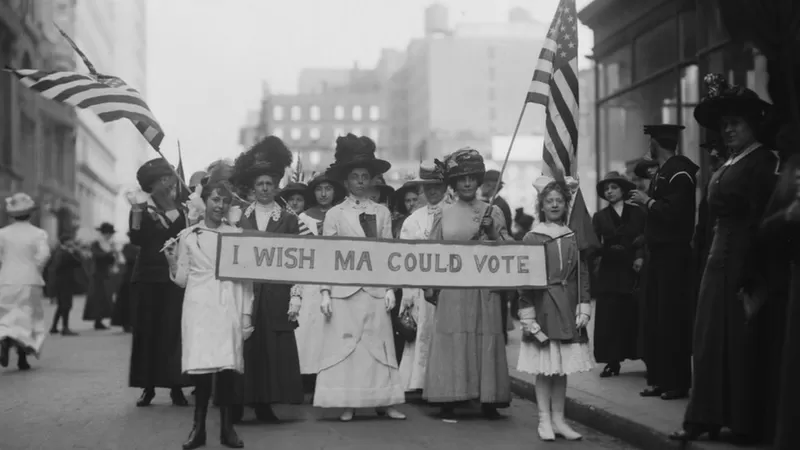

| La necesidad de conmemorar un Día Internacional de la Mujer nace al final del siglo XIX, después de la Revolución Industrial. Este fue un periodo histórico que transformó la economía y el modo de trabajo desde finales del siglo XVIII y principios del siglo XIX. Sin embargo, uno de los problemas más grandes era que muchas mujeres eran explotadas y ninguna ley las protegía. El 8 de marzo de 1857, las mujeres que trabajaban en la industria textil, que eran llamadas «garment workers» en inglés, en Nueva York, organizaron una huelga. Ellas peleaban para que hubiera salarios más justos y condiciones laborales más humanas. Sin embargo, al momento de alzar la voz, los agentes de la policía las detienen. |  El 8 de marzo es una fecha destacada en múltiples partes del mundo. Se conmemora el Día Internacional de la Mujer, formalizado por Naciones Unidas en 1975. Este especial día, en palabras de la ONU, "se refiere a las mujeres corrientes como artífice de la historia y hunde sus raíces en la lucha plurisecular de la mujer por participar en la sociedad en pie de igualdad con el hombre". 9 comentarios a mujeres exitosas que tal vez nunca se le harían a un hombre Este acertijo quizás te muestre algo de ti mismo que no sabías Pese a haberse convertido en una jornada global en pro de la igualdad, muchas personas aún se preguntan cuál es su origen y qué llevó a que el 8 de marzo obtuviera este reconocimiento internacional. Para explicarlo, hay que echar la vista atrás: a las protestas que desembocaron en toda una revolución. A finales del siglo XIX y principios del XX. |